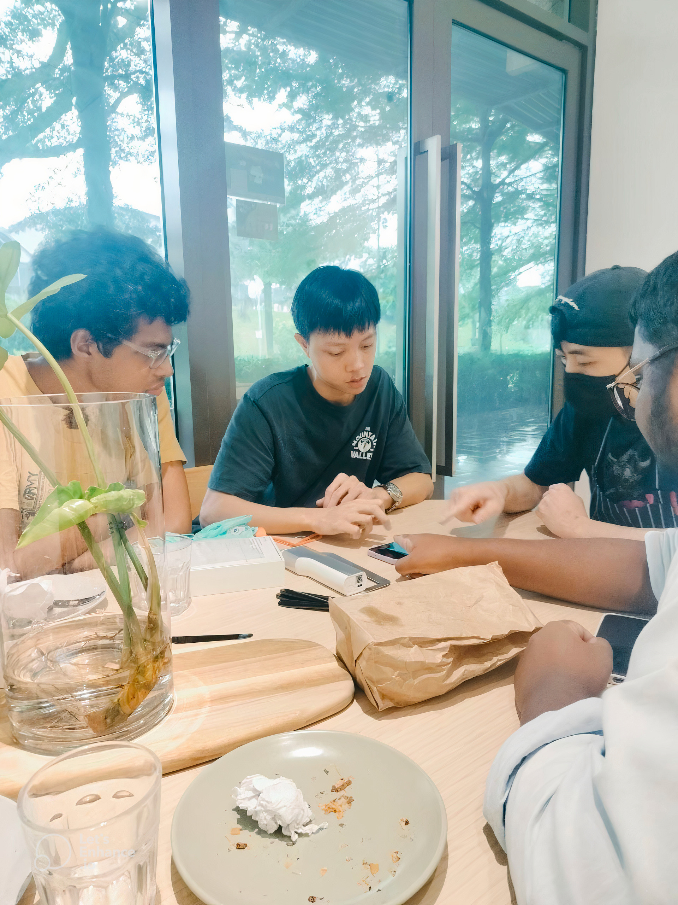
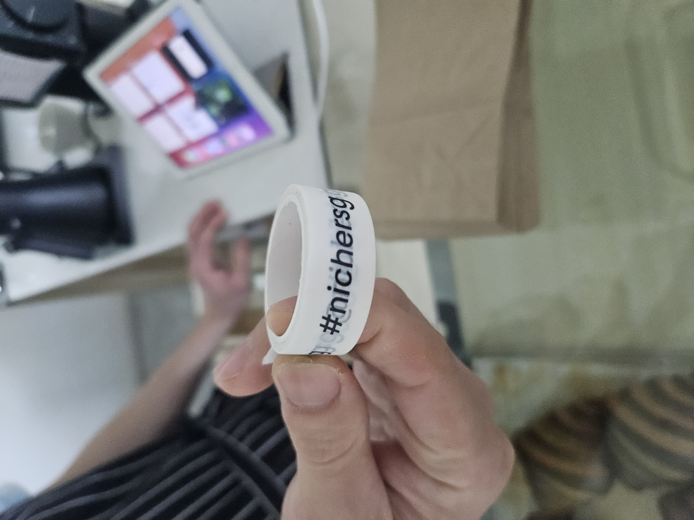
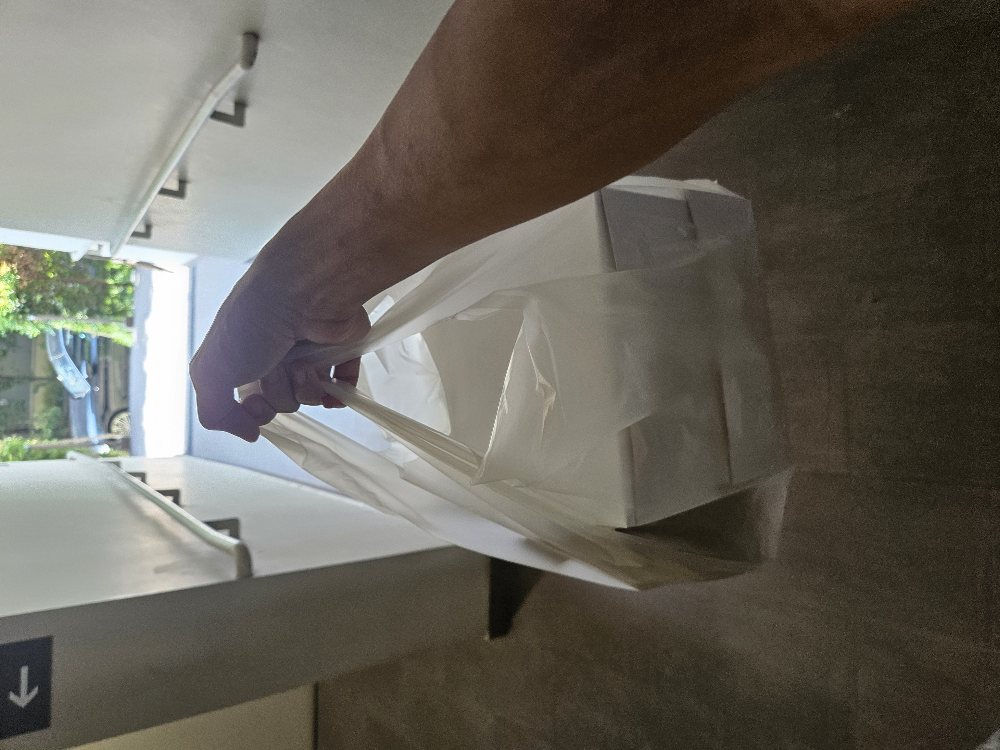

Biocide Dispensing System
Define an Innovative Food Printing system using a Systems approach. The formal application of Systems Engineering (SE) Concepts & Principles based on 15288 Processes.
Learning Objectives
- Formally apply academic knowledge of SE Processes in SEP2.
- Practice Project Management skills to align the project team throughout the project and ensure timely deliverables.
- Develop a working prototype with EVEBOT print pen as a system constraint.
Learning Outcomes
The system

Successfully demonstrated functionalities of prototype: EVEBOT Automation Solution Y (EASY) with Technical Documentation
- Automation of print.
- Print on flat surfaces.
- Print on monochrome objects.
- Print with variability.
EVEBOT Automation Solution Y (EASY): A New Era in Bakery Branding
About: EASY aims to revolutionize the way bakeries present their products. Where innovation meets practicality, a conveyor belt system that serves as an interface between stages of pastry handling. This solution minimizes manual labor and streamlines the process of printing brand logos on pastries, making it an attractive addition to bakery operations.
Workflow Improvement: In a typical bakery, the workflow involves several manual steps:
- Baking: The chef places tray of pastries in the oven.
- Cooling: The chef removes the tray from the oven and places them on a cooling rack.
- Display: A clerk then transfers the cooled pastries from the rack to the display.
EASY integrates seamlessly into the existing workflow by adding a brand logo printing step between step 2 and 3. This simple addition transforms ordinary pastries into branded artisanal products, making them stand out in the competitive bakery market.
Systems Engineering Tailoring: SEP2 leverages core principles of systems engineering and project management:
- Communication is Key: With a team of five and a 12-week project timeline, effective communication is crucial. We adopted Agile Methodology and maintain regular consultations with stakeholders and professors/instructors to align our work with evolving expectations and requirements.
- Only doing work necessary to accomplish project objectives: “Thinking” is always “in scope” and all other work is considered “out of scope”.
- Flexibility and Adaptability: Recognizing the dynamic nature of the project, we are prepared to adapt to changes, whether driven by new stakeholder needs, technological advancements, or resource constraints.
- Project Management with a focus on feasibility: Our approach emphasizes practicality and viability, ensuring that our innovations are not only technically sound but also implementable within the project's scope.
Current and Future Capabilities
Current Functionalities:
- Automated Printing: Streamlined process for efficiency.
- Versatility: Ability to print on flat, monochrome surfaces with size and alignment variability.
Future Functionalities:
- Curved Surface Printing: Using advanced camera like the Intel REALSENSE Depth Camera D456, we plan to enhance the system's ability to print on curved surfaces, improving print quality and versatility.
- Color Contrast Printing: Utilizing cameras with color image sensors to print on surfaces with varying colors.
Key Strengths:
- Innovation: EASY introduces a new dimension to bakery automation, combining efficiency with creative possibilities.
- Flexibility: The system can accommodate different object sizes and alignments, catering to diverse needs.
- Automation: By automating routine tasks, EASY frees up user to focus on more value-added activities, enhancing overall productivity.
Stakeholder Validation
Identified Stakeholder Nicher and discussed opportunity for EASY to be launched in the market.

Nicher's founder Melvin has endorsed EASY, highlighting its potential to add significant value to brand printing in the artisanal pastry industry. According to him, "This product will be a Kickstarter to something different, something new that adds value to brand printing on croissants."
He also validated that EASY will help with brand recognition, allowing customers to differentiate his croissants from others, due to all croissants looking the same.

Pictured from left to right are Muslinmin, Kaushik, Reuben, Yugendren, Baker and Founder of Nicher: Melvin, and myself, Stafford.

We regularly engaged with the stakeholder Nicher to learn more about the market and to get feedback.
Melvin shared that Nicher gets the bulk of their business from catering for corporate events and that manual printing of branding would be unfeasible due to the low manpower in the bakery.

Stakeholder Nicher does not rely much on social media to get business, they had a mini croissant cereal gimmick that went viral for a while and business went back to normal soon after.
Melvin says that their only marketing technique is the use of washi tape with Nicher's brand name to seal their boxes and does not believe in embossing his artisanal pastries for branding as doing so will ruin their shape.


We manually printed Nicher's brand logo on their croissants using the EVEBOT and presented it to him, proposing that if we could replicate the results through automation, he might be interested in adopting the system. He agreed, so we started working on ensuring that EASY could print the Nicher's brand logo legibly on his artisanal pastries.
EASY successfully printed Nicher's brand logo and the stakeholder found the results acceptable.


Prototyping & Fabrications
Developed 3D CAD models using SolidWorks to replicate EASY.

Utilized Arcadia and Capella Skills to model out Physical Architecture of EASY.

Below are some of the previous iterations of EASY.


Early prototype and architecture representations of Ball Point Pen system which we later decided to terminate to explore other concepts.